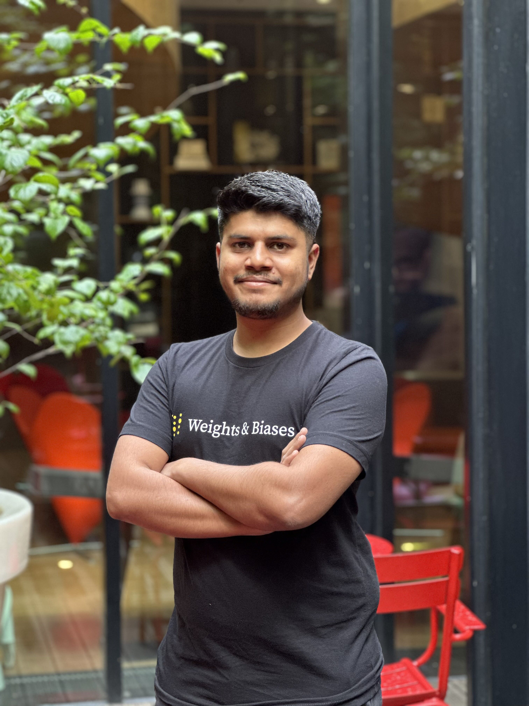

Ayush Thakur
I build and evaluate AI systems.
I am a Manager, AI Engineering at Weights & Biases by CoreWeave. I am currently working on internal coding agents, evaluation harnesses, memory, and systems that improve through their own experience.
Previously, I was a growth MLE at W&B. I built open-source MLOps and LLMOps integrations, production RAG systems such as Wandbot, technical courses, and a large body of practical ML writing. My work helped grow W&B’s brand and made its tools more useful and accessible to the ML community.
I began working on autonomous robots and computer vision early in my career, and that experience shaped how I approach engineering: move with urgency, stay close to real problems, learn by building, and take ownership from an idea through to a working outcome. I am always interested in collaborating with researchers and engineers who want to turn ambitious questions into useful systems and share what we learn along the way.
News
Experience in brief
Agent engineering, internal productivity, evaluation harnesses, and applied research.
Open-source integrations, LLM evaluation, Wandbot, courses, Kaggle programs, and technical education.
Technical reports on deep learning, computer vision, and practical ML engineering.
Writing and teaching
I have published 70 technical reports and 73 public notebooks across LLM systems, RAG, deep learning, computer vision, generative modeling, training infrastructure, and applied ML. I have also helped create three free technical courses and spoken at W&B events, DataHack Summit, GDG communities, and local ML workshops.
Publication
With Devjyoti Chakraborty, Snehangshu Bhattacharya, Aritra Roy Gosthipaty, and Chira Datta. We transformed heart-sound recordings into spectrograms and used convolutional neural networks to classify normal and abnormal phonocardiograms.IEEE · Google Scholar
Earlier
I studied Electronics and Communication Engineering at Netaji Subhash Engineering College, Kolkata. College began with autonomous robots: line followers, maze solvers, and a grid-navigation robot that could avoid obstacles and retrace the shortest route. That work taught me the systems instinct I still rely on when debugging ML and agentic systems.